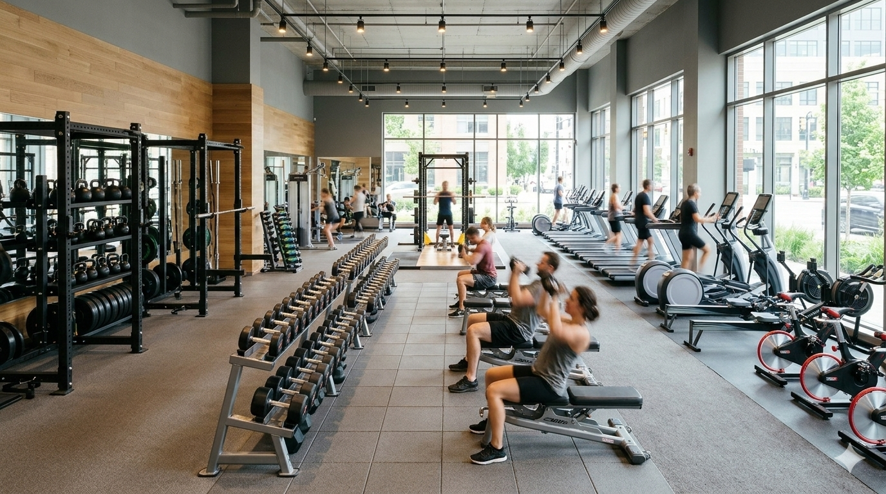
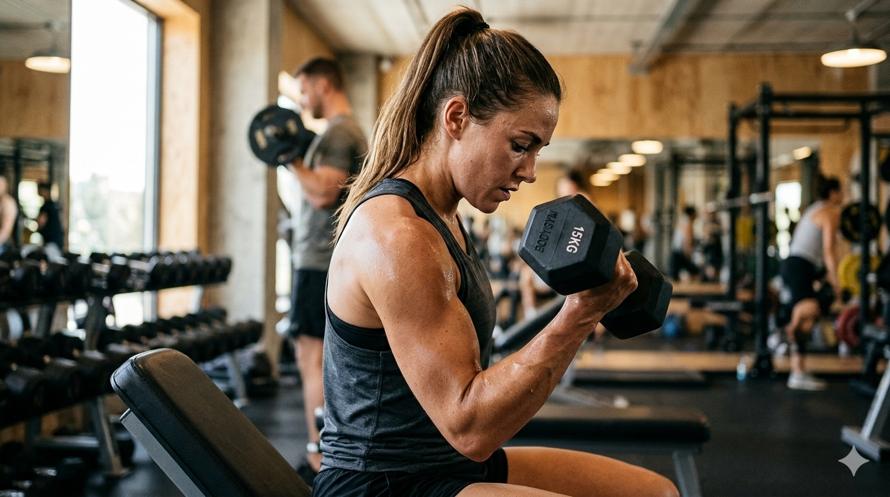

Bem-vindo ao BODYGYM em Vila Cácia
O teu espaço de treino, saúde e superação pessoal em Cabo Verde.

Porquê treinar connosco?
No BODYGYM acreditamos que a atividade física transforma vidas. Oferecemos um ambiente acolhedor, equipamentos modernos e acompanhamento dedicado para todos os níveis.
- Equipamentos de musculação e cardio completos
- Aulas de grupo dinâmicas todas as semanas
- Instrutores certificados prontos a ajudar
Destaques das Modalidades

Conheça os nossos planos de treino personalizados e horários flexíveis na página de Serviços e Horários.